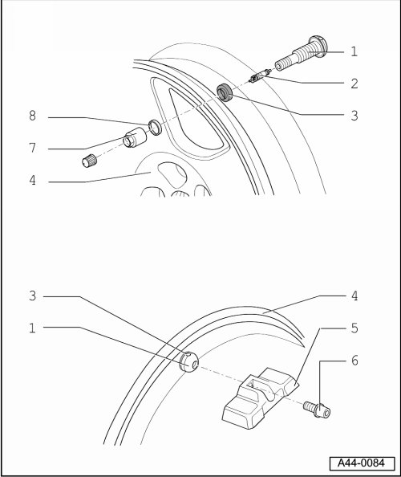

Tire Pressure Monitoring System, Generation 1
Tire Pressure Sensor and Metal Valve Component Overview

1 Metal valve
• Supplied complete as replacement part.
• Removing and installing, refer to --> [ Metal Valve ] Removal and Replacement.
2 Valve core
• Replace at every tire change.
3 Seal
• Individual component of --> [ (Item 1) Metal valve ].
4 Wheel
• Tire mounting, refer to --> [ Tires, Mounting ] Procedures.
5 Tire pressure sensor
• Left front tire pressure monitoring sensor (G222)
• Right front tire pressure monitoring sensor (G223)
• Left rear tire pressure monitoring sensor (G224)
• Right rear tire pressure monitoring sensor (G225)
• Spare tire pressure monitoring sensor (G226)
• Removing and installing, refer to --> [ Tire Pressure Sensor ] Tire Pressure Sensor.
6 Torx bolt T20
• Individual component of --> [ (Item 1) Metal valve ].
• 4 Nm.
7 Nut
• Individual component of --> [ (Item 1) Metal valve ].
• 4 Nm.
8 Washer
• Individual component of --> [ (Item 1) Metal valve ].